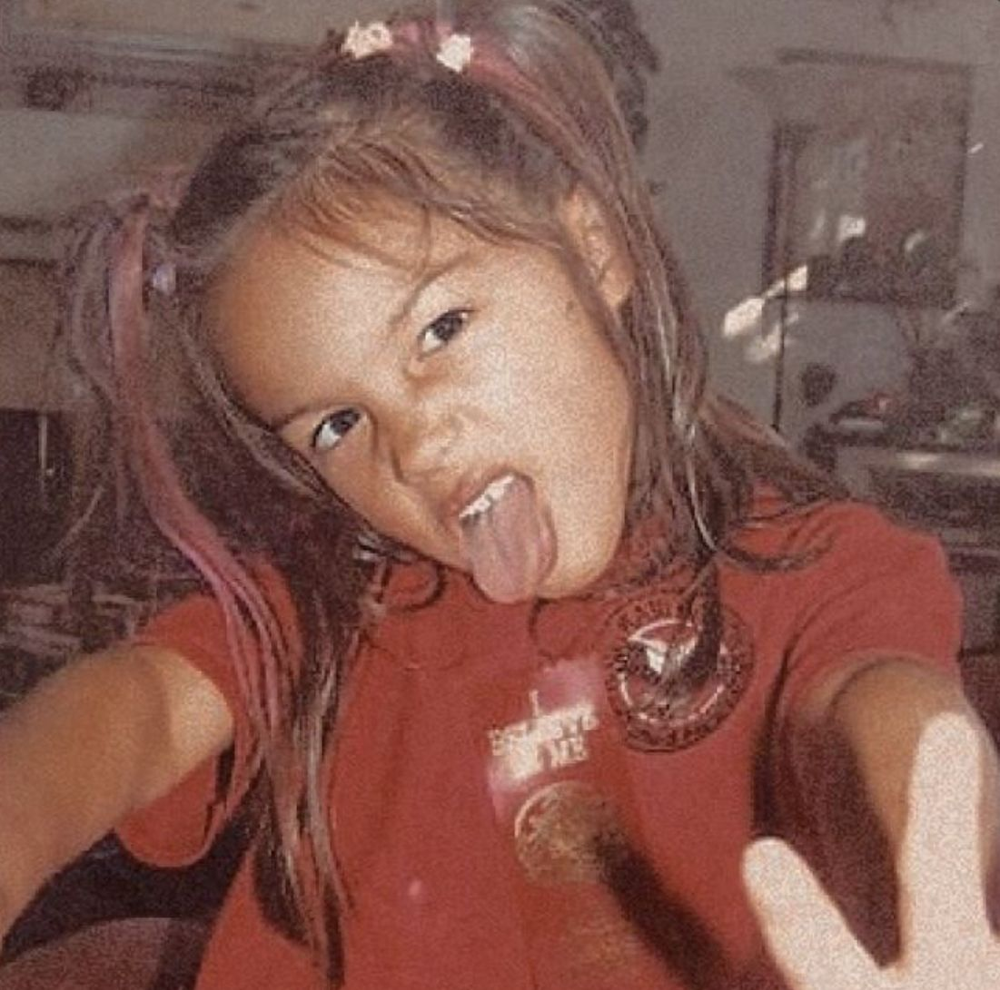

Biografia
Infância e primeiros passos
Olivia Isabel Rodrigo nasceu em 20 de fevereiro de 2003, na Califórnia, Estados Unidos.
Desde pequena, Olivia demonstrava interesse pela música e pela atuação, participando de aulas de canto e apresentações artísticas.

Carreira artística
Início na televisão
Antes de conquistar o mundo da música, Olivia Rodrigo ficou conhecida por seus trabalhos como atriz em produções do Disney Channel .
Ela participou da série Bizaardvark e posteriormente de High School Musical: The Musical: The Series .
Sucesso na música
Em 2021, Olivia lançou seu primeiro single, drivers license , que alcançou grande sucesso internacional.
No mesmo ano, lançou seu primeiro álbum, SOUR, que apresentou músicas como good 4 u e deja vu .
Em 2023, lançou seu segundo álbum, GUTS, explorando novas sonoridades e experiências relacionadas ao amadurecimento.
Curiosidades sobre Olivia Rodrigo
Fatos interessantes
- Olivia nasceu em 20 de fevereiro de 2003.
- Seu primeiro álbum foi SOUR, lançado em 2021.
- Seu segundo álbum foi GUTS, lançado em 2023.
- Além de cantora, Olivia também é atriz.
- Suas músicas misturam influências de pop e rock.
Conheça sua música!
Assista ao videoclipe de drivers license
Confira o videoclipe de uma das músicas mais conhecidas da carreira de Olivia Rodrigo.